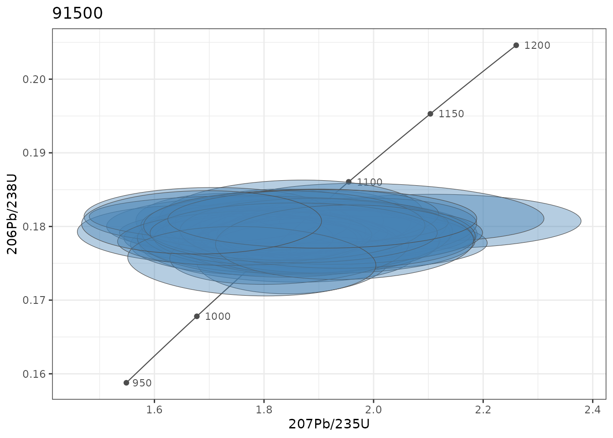
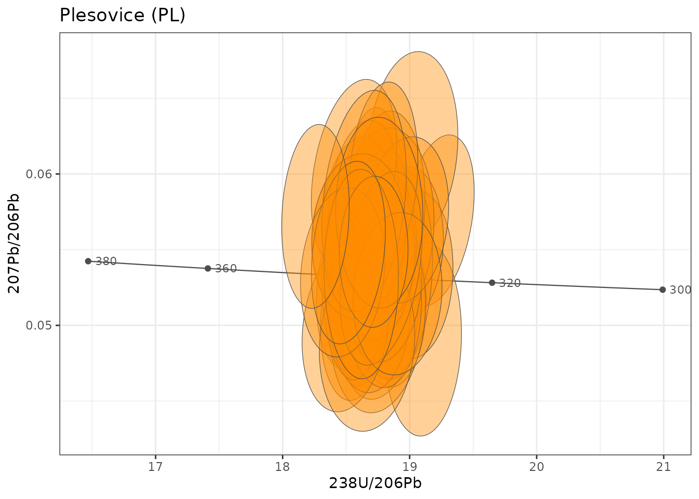
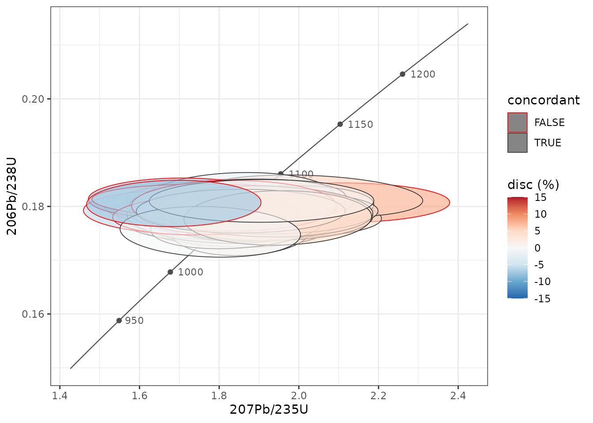

U-Pb geochronology and concordia diagrams
u-pb-geochronology.RmdztR computes single-grain U-Pb ages with IsoplotR behind a tidy interface, and draws concordia diagrams as ordinary ggplot2 layers. This article uses the reference zircons shipped with the package (91500, Plešovice, FC-1 and PCIGR-1).
The age calculations need IsoplotR
(install.packages("IsoplotR")); the concordia layers do
not.
library(ztR)
library(tidyverse)
zircons <- read_csv(system.file("extdata", "stds_zircon.csv", package = "ztR"),
show_col_types = FALSE, name_repair = "unique_quiet") %>%
rename_with(~ .x %>%
str_replace_all("_mean|_ppm", "") %>%
str_replace_all("_2se_int", "_2s")) %>%
mutate(sample = recode(sample, "91500-G" = "91500", "FC1" = "FC-1")) %>%
mutate(spot = row_number(), .by = sample)
# a manageable subset: 40 analyses per reference material
zr40 <- zircons %>% filter(spot <= 40)1. Single-grain ages
use_isoplotr() needs the three ratios with their 2σ
absolute uncertainties. The error correlations
rho_206pb_238u_v_207pb_235u (Wetherill) and
rho_207pb_206pb_v_238u_206pb (Tera-Wasserburg) are used
when present; otherwise IsoplotR infers them from the redundancy of the
three ratios.
ages <- use_isoplotr(zr40, legacy = FALSE)
#> 18 row(s) with missing or non-positive ratios/errors: ages set to NA.
ages %>%
select(sample, age_68, age_68_2s, age_76, age_76_2s, age_conc, age_conc_2s, p_conc, disc_c) %>%
head()
#> # A tibble: 6 × 9
#> sample age_68 age_68_2s age_76 age_76_2s age_conc age_conc_2s p_conc disc_c
#> <chr> <dbl> <dbl> <dbl> <dbl> <dbl> <dbl> <dbl> <dbl>
#> 1 91500 1067. NA 954. NA 1063. NA NA -4.20
#> 2 91500 1071. NA 1282. NA 1074. NA NA 8.48
#> 3 91500 1069. NA 1120. NA 1070. NA NA 1.98
#> 4 91500 1050. NA 1061. NA 1051. NA NA 0.417
#> 5 91500 1053. NA 1020. NA 1052. NA NA -1.25
#> 6 91500 1069. NA 942. NA 1067. NA NA -4.94Every uncertainty column ending in _2s is 2σ.
disc_c is the concordia-distance discordance (%) of
Vermeesch (2021); other definitions are available through
discordance ("r", "t",
"a", "sk", see
IsoplotR::discfilter()).
Speed
The single-grain concordia age is what makes IsoplotR slow (tens of
milliseconds per grain). When only the 7/5, 6/8 and 7/6 ages are needed,
concordia = FALSE is about 20 times faster:
all_ages <- use_isoplotr(zircons, concordia = FALSE, legacy = FALSE)
#> 19 row(s) with missing or non-positive ratios/errors: ages set to NA.
nrow(all_ages)
#> [1] 30992. Comparison with Iolite
The table also carries the ages exported by Iolite
(pb206_u238_age, pb207_pb206_age, …), which
gives a direct check of the calculation:
all_ages %>%
transmute(sample,
`206Pb/238U` = age_68 - pb206_u238_age,
`207Pb/235U` = age_75 - pb207_u235_age) %>%
pivot_longer(-sample, names_to = "system", values_to = "difference") %>%
group_by(sample, system) %>%
summarise(median_Ma = median(difference, na.rm = TRUE),
p95_abs_Ma = quantile(abs(difference), 0.95, na.rm = TRUE),
.groups = "drop")
#> # A tibble: 8 × 4
#> sample system median_Ma p95_abs_Ma
#> <chr> <chr> <dbl> <dbl>
#> 1 91500 206Pb/238U 2.99 18.1
#> 2 91500 207Pb/235U 29.9 71.0
#> 3 FC-1 206Pb/238U 2.28 10.0
#> 4 FC-1 207Pb/235U 11.0 32.7
#> 5 PCIGR1 206Pb/238U 0.371 0.510
#> 6 PCIGR1 207Pb/235U 31.7 42.1
#> 7 PL 206Pb/238U 0.228 1.30
#> 8 PL 207Pb/235U 3.66 8.84The 206Pb/238U ages agree within a few tenths of a percent (median offset of 3 Ma at 1065 Ma for 91500, 0.2 Ma for Plešovice). The 207Pb/235U ages are systematically older in IsoplotR, by up to ~3% in the low-Pb reference materials. The most likely reason is that Iolite reports the mean of the ages of each integration, whereas IsoplotR computes the age of the mean ratio; with noisy 207Pb signals the two diverge. The 206Pb/238U uncertainties are identical:
3. Median ages of the reference materials
ages %>%
summarise(n = n(),
concordia_age = median(age_conc, na.rm = TRUE),
age_68 = median(age_68, na.rm = TRUE),
.by = sample)
#> # A tibble: 4 × 4
#> sample n concordia_age age_68
#> <chr> <int> <dbl> <dbl>
#> 1 91500 40 1062. 1061.
#> 2 PCIGR1 40 1060. 1065.
#> 3 PL 40 335. 335.
#> 4 FC-1 40 1096. 1096.Reference values: 91500 ≈ 1065 Ma (Wiedenbeck et al. 1995), Plešovice ≈ 337 Ma (Sláma et al. 2008), FC-1 ≈ 1099 Ma (Paces & Miller 1993).
4. Concordia diagrams
geom_concordia() draws one error ellipse per row from
x, y, sigma_x,
sigma_y and rho. By default the ellipse is the
95% confidence region; sigma_level = 2 tells the layer that
the uncertainties mapped to sigma_x/sigma_y
are 2σ. geom_concordia_line() adds the concordia curve with
age markers.
Wetherill
zr40 %>%
filter(sample == "91500") %>%
ggplot(aes(x = pb207_u235, y = pb206_u238,
sigma_x = pb207_u235_2s, sigma_y = pb206_u238_2s,
rho = rho_206pb_238u_v_207pb_235u)) +
geom_concordia_line(age_range = c(950, 1200), ticks = seq(950, 1200, 50)) +
geom_concordia(sigma_level = 2, alpha = 0.4, fill = "steelblue", colour = "grey30",
linewidth = 0.2) +
labs(title = "91500", x = "207Pb/235U", y = "206Pb/238U") +
theme_bw()
The concordia line is drawn over age_range, which also
sets how far the plot extends; choose it around the ages of the data.
Because the line does not know about facets, draw one diagram per sample
(or per age window) rather than faceting samples of very different
ages.
Tera-Wasserburg
Build 238U/206Pb and its uncertainty from 206Pb/238U, and use the Tera-Wasserburg correlation:
zr40 %>%
filter(sample == "PL") %>%
mutate(u238_pb206 = 1 / pb206_u238,
u238_pb206_2s = pb206_u238_2s / pb206_u238^2) %>%
ggplot(aes(x = u238_pb206, y = pb207_pb206,
sigma_x = u238_pb206_2s, sigma_y = pb207_pb206_2s,
rho = rho_207pb_206pb_v_238u_206pb)) +
geom_concordia_line("tw", age_range = c(300, 380), ticks = seq(300, 380, 20)) +
geom_concordia(sigma_level = 2, alpha = 0.4, fill = "darkorange", colour = "grey30",
linewidth = 0.2) +
labs(title = "Plesovice (PL)", x = "238U/206Pb", y = "207Pb/206Pb") +
theme_bw()
Colouring by discordance
Any aesthetic can be mapped. Here the ellipses are filled by the concordia-distance discordance, with IsoplotR’s default cutoff (−2% to +5.8%) marked by the outline:
ages %>%
filter(sample == "91500") %>%
mutate(concordant = between(disc_c, -2, 5.8)) %>%
ggplot(aes(x = pb207_u235, y = pb206_u238,
sigma_x = pb207_u235_2s, sigma_y = pb206_u238_2s,
rho = rho_206pb_238u_v_207pb_235u)) +
geom_concordia_line(age_range = c(900, 1250), ticks = seq(950, 1200, 50)) +
geom_concordia(aes(fill = disc_c, colour = concordant), sigma_level = 2,
alpha = 0.6, linewidth = 0.3) +
scale_fill_distiller(palette = "RdBu", limits = c(-15, 15), oob = scales::squish) +
scale_colour_manual(values = c(`TRUE` = "grey20", `FALSE` = "red")) +
labs(x = "207Pb/235U", y = "206Pb/238U", fill = "disc (%)") +
theme_bw()
5. Notes for older code
-
use_isoplotr()andtidy_isoplotr()still return the old columns by default (legacy = TRUE). The olds_2_*columns hold 1σ values (they always did); use the*_2scolumns instead. Before version 0.0.0.9001 the data were read in the wrong IsoplotR format, so old 207/206 ages, concordia ages and discordances should be recomputed. -
add_concordia_line()still works, but its axes are transposed (x = 206Pb/238U, y = 207Pb/235U). Usegeom_concordia_line()for new plots. -
geom_concordia()now draws 95% ellipses by default;level = NULLreproduces the old 1σ ellipses.